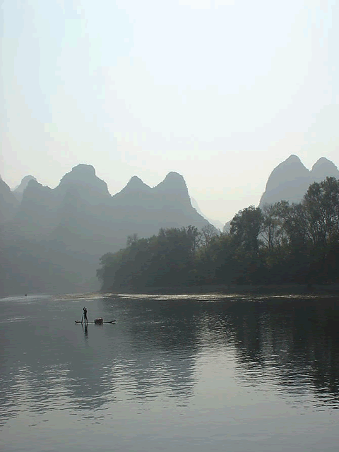

| 桂林简介 |
|  |
桂林自古享有“山水甲天下”之美誉，是中国乃至世界重要的旅游目的地城市，有着被国务院确定的国家重点风景游览城市和历史文化名城两顶桂冠，被誉为国际旅游明珠。桂林风景秀丽，以漓江风光和喀斯特地貌为代表的山水景观，有山青、水秀、洞奇、石美“四绝”之誉，是中国自然风光的典型代表和经典品牌。“千峰环野立，一水抱城流”，景在城中，城在景中，是桂林城市独具魅力的特色。
桂林位于广西壮族自治区东北部，“湘西走廊”南端。境内地形复杂，地貌多样，四周山地环绕，地势由西向东依次降低，漓江和义江自北向南流经辖区。桂林有浩瀚苍翠的原始森林、雄奇险峻的峰峦幽谷，激流奔腾的溪泉瀑布，天下奇绝的高山梯田，有壮、瑶、苗、侗等十多个少数民族。
桂林旅游资源丰富，并具有以下五个方面特点和优势：一是山川秀丽独特。典型的喀斯特地貌和丹霞地貌赋予桂林“山青、水秀、洞奇、石美”的山水风光，素有“甲天下”的盛誉；二是自然资源和人文资源浑然一体。漓江、芦笛岩、象鼻山、龙脊、八角寨、灵渠、桂海碑林、王城等景区（点）各具特色；三是城市与景区交融，推窗、出门就能见景，且景观分布适当，旅游可达性好；四是景观分布的空间层次多，且各具特色，便于多种旅游线路的组合与分期分区开发；五是多数景区有城镇做依托。部分景区已有一定的开展基础，适宜开展多功能、多层次、多种形式的旅游活动，增强可游性。
近年来，桂林市加大旅游资源整合和开发力度，大力推出了两江四湖、乐满地、印象刘三姐、愚自乐园、龙胜温泉、银子岩、秦城水街等各具特色和高品位的旅游精品。 |
|
桂林山水甲天下， 漓江碧透映彩霞。 两岸奇峰若入画， 胜过白石作龙虾。 |
|
| 特惠旅游团 |
1.桂林山水精华一日游
2.桂林经典全景两日游
3.探古桂林漓江三日游 |
| 旅游须知 |
1.尽量要集体出行
2.参加正规旅行社
3.祝您旅行愉快!! |
| 推荐酒店 |
1.桂林环球大酒店
2.桂林桂湖饭店
3.桂森漓江大瀑布饭店 |
|